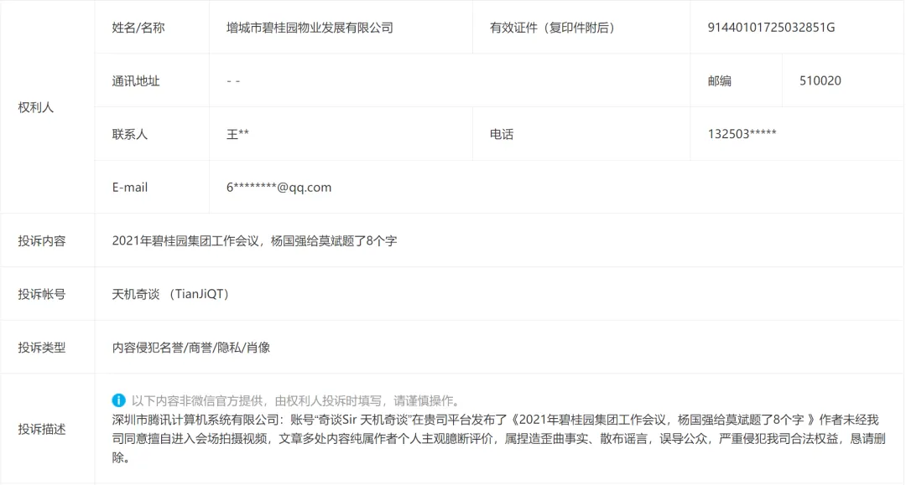
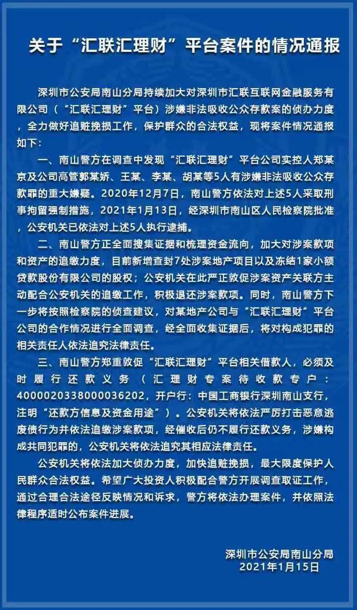

碧桂园你出来走两步给大家看看
碧桂园，你出来走两步给大家看看
要问公众号被房企投诉最多的是谁，目前来看，是天机。
现在的房企是真的菜，一遇到自家真实负面事件被曝光，第一时间都是公关，公关搞不定就投诉，从不反思自身存在的问题。
投诉天机最多的，目前是碧桂园。只要涉及碧桂园负面的，几乎都会被投诉，关键是投诉得没一点道理，每次都被判定为恶意投诉，被驳回。
上周写的 2021年碧桂园集团工作会议，杨国强给莫斌题了8个字 ，当天又被碧桂园投诉了，已再次被判定为恶意投诉，驳回：

这是天机目前见过的，最不要碧莲的房企。每次实事求是说碧桂园质量差也要被投诉，这不，本次碧桂园官方内部会议都已经承认自己质量差。
2019年10月下旬，天机写了碧桂园和汇理财的相关文章，文中指出汇理财是碧桂园深度合作的融资平台，多笔资金流入碧桂园旗下项目，资金涉及大量碧桂园的业主、员工及亲属等。
碧桂园随即投诉，提交的投诉中称天机杜撰、编造相关事件，事件不属实。在投诉的当天傍晚，又请了公关公司来要求删文（邮箱里保存了相关证据）。对于这类行为，咱一向只有一个态度：去你大爷的，地球有多远，就滚多远。
后来，该事件被多家媒体挖出，碧桂园的众多项目确实与汇理财的资金有深度关联，众业主、员工及亲属等几千、几万、几十万、几百万的资金（清单等证据天机这有），因碧桂园的背书关系而有信任感，投入汇理财；汇理财也把多笔巨额资金投给碧桂园的项目。相关事件网络上也有。
一年多过去了，有关部门对此事做了盖棺定论，结合汇理财的企业宣广资料，可以非常确定，文中的“某地产公司”即指碧桂园。碧桂园再一次被打脸，天机之前所说确实是事实：

你碧再强，也不能胡说八道，妄图堵尽天下人悠悠之口；你碧再有钱，也公关不了所有人。要有点度量，容得下别人说事实。
诺大一家世界500强企业，没有做好表率，自己经常满口胡言不承认事实也就算了，还屡次投诉栽赃他人杜撰编造。
碧桂园的品牌部就是这么一副垃圾德行么？该不会又是什么临时工、代运营方的行为吧？
反正等了碧桂园一年半的道歉，至今也没等来，估计也等不来了。这几年，碧桂园什么样的嘴脸，慢慢都被拆穿、看穿了。
这两年的房企，最擅长”辟谣“了，水平越来越低，以至于地产圈吃瓜群众将谣言解释为：遥遥领先的预言。
若不改进，这样的企业还想做百年企业？只怕坟头草三丈高。 咦 ， 碧桂园总部建筑外 包裹的 那些绿植， 都不止三丈高了。
碧桂园如此”斯文、讲理“，杨主席真治下有方： 君者，源也。 源清则流清 ，源浊则流浊。
下一期地产天机将更新金科篇，详情可关注地产天机： 文末左下角的“ 阅读原文 ”。若是喜欢，文末请 **“分享、点赞、在看 ** ”一键三连 ，欢迎留言区一起侃大山。

按日期浏览全部来源（同日按条目标识排序）